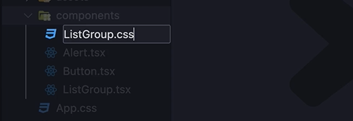
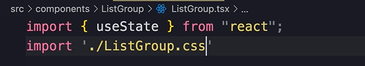
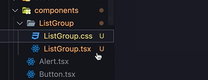
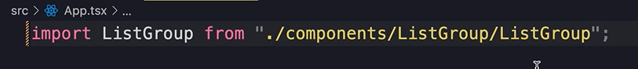
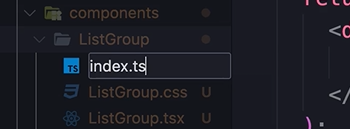
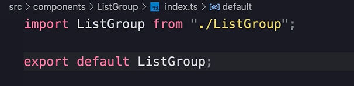
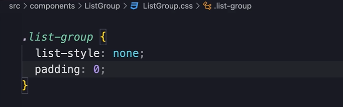

HOME
Vanilla CSS
Alot of people dont like this approach these days, because with all
the frameworks out there, they find it time consuming and tedious.
But, if you dont want to use these frameworks, we are going to learn
how to style our components with plain css.
Remove Bootstrap
Open the 'main.tsx' and remove the Bootstrap import.
Create the CSS file

And import it to the ListGroup...

Separate folder
You can set it up however you like, but a common approach for better
organization is to take the related files and put them in a folder
together.

As a result of doing this, we will need to update our import path.

But this is quite ugly, and there is a way to make it better.
index.ts
Create this file...

It should say this...

With that we can just reference the folder, and by default, Typescript
will look for an index file.
Write Your Styles
Finally, write your desired styling.
